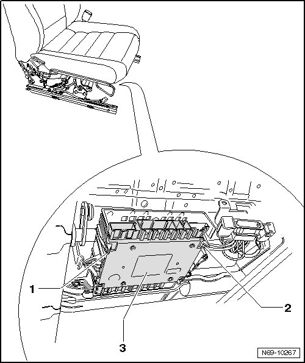
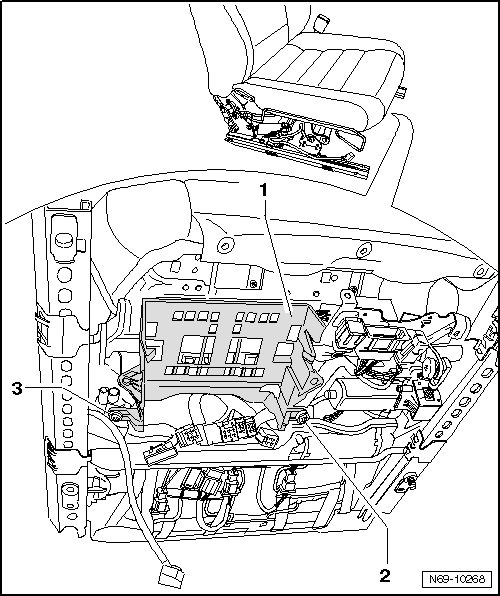
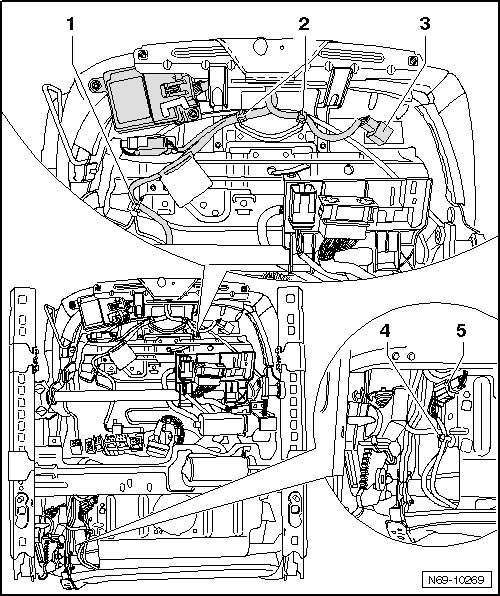
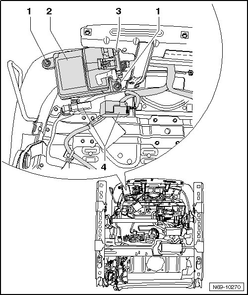
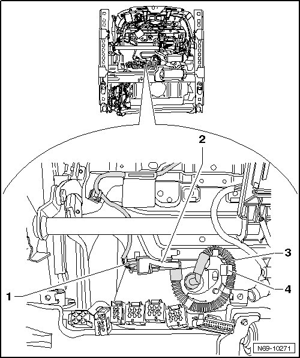
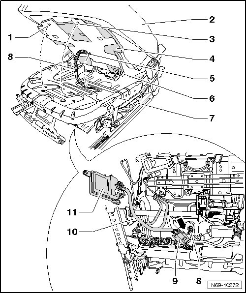
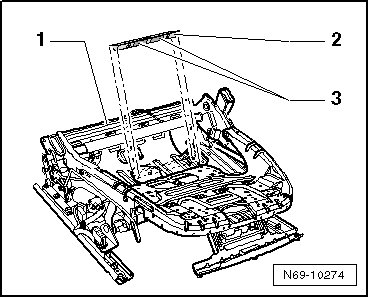

Passive Occupant Detection System
Passive Occupant Detection System
--> [ Passive Occupant Detection System Components ]
--> [ Passive Occupant Detection System Repair Kit ]
Passive Occupant Detection System Components
Seat occupied recognition controls automatic passenger airbag deactivation.
This equipment is only installed on vehicles released in the USA.
CAUTION!
Observe safety precautions when working on seat occupied recognition --> [ Passenger Occupant Detection System Safety Precautions ] Customer Safety Information.
• Seat cushion, mat for seat occupied recognition, control module and pressure sensor must only be replaced together. Components are complementary and must not be separated!
• Only disconnect wiring harnesses mentioned in the following description!
- Mount the fixture for seat repair (VAS 6136) on the engine and transmission holder (VAS 6095).
- Perform the following seat adjustment:
• Seat height: highest position
• Seat tilt: highest position
- Remove belt anchor --> [ Belt Anchor ] Belt Anchor
- Remove seat rail covers --> [ Seat Rail Covers ] Front Seats
- Remove 12-way seat --> [ Front Seat ] Front Seats
- Attach the seat to the fixture for seat repair (VAS 6136).
- Remove 12-way seat backrest hinge trim --> [ Front Seat Backrest Hinge trim ] Front Seats
- Remove 12-way seat trim --> [ Front Seat Trim ] Front Seats.
- Remove side hooks - 1 - and - 2 - outward and remove Memory Seat/Steering Column Adjustment Control Module (J136) - 3 - from mounts.
- Separate all connectors from the control module.

- Remove screws - 2 - (1.5 Nm) and - 3 - (1.5 Nm) and unclip control module bracket - 1 - from seat frame.

- Remove front seat backrest (12-way seat) --> [ Front Seat Backrest ] Front Seats.
- Remove cable ties - 2 - and - 4 -.
- Loosen seat occupied recognition connector - 3 - from seat pan.
- Remove cable bracket - 1 -.
- Disconnect seat heating connector - 5 -.

- Remove cover from upholstery of front seat cushion (front seat cushion is not removed) --> [ Seat Cushion and Upholstery ] Front Seat Cushion and Upholstery.
CAUTION!
Connector - 3 - may not be removed from Seat Occupied Recognition Control Module (J706) - 2 -.
- Disconnect connector - 4 -.
- Remove two bolts - 1 - (1,5 Nm).

- Unclip Seat Occupied Recognition Pressure Sensor (G452) - 2 - from bracket without disconnecting connector - 1 - on it.
- Unclip pressure hose - 3 - from bracket - 4 -.

- Lift upholstery of front seat cushion - 62 -, when doing this do not separate upholstery of front seat cushion from mat for seat occupied recognition - 4 -.
- Remove clips - 1 -, - 3 - and - 5 - from seat frame, clip - 6 - must not be removed.
CAUTION!
Do not separate the seat padding - 2 -, passenger occupant detection mat - 4 -, pressure hose - 8 -, seat occupied recognition pressure sensor (G452) - 9 - and the seat occupied recognition control module (J706) - 11 -.
- Remove upholstery of front seat cushion - 2 - together with mat for seat occupied recognition - 4 -.
- Thread pressure hose - 8 -, Seat Occupied Recognition Pressure Sensor (G452) - 9 -, Seat Occupied Recognition Control Module (J706) - 11 - and seat wiring harness - 10 - through opening - arrow - in seat frame - 7 -.

Passive Occupant Detection System Repair Kit
Seat occupied recognition controls automatic passenger airbag deactivation.
This equipment is only installed on vehicles released in the USA.
• When installing, there must be no wiring harness of seat heater between upholstery and mat for seat occupied recognition.
• Pressure hose must be routed without kinking.
• Stickers with notes on harness connectors must not be damaged.
• After vehicle was connected to electrical system, check replaced components for freedom of movement by moving seat.
After replacing seat occupied recognition, basic setting of seat occupied recognition must be performed using diagnostic tester containing "Guided Fault Finding" --> [ Seat Occupied Recognition, Basic Setting ] Component Tests and General Diagnostics.
CAUTION!
Basic setting must be performed when seat is not occupied.
Installation is reverse of removal, noting the following:
- Secure insertion profile - 2 - with double-sided tape - 3 - on seat frame - 1 - as shown.

- Bracket - 4 - can rotate slightly during removal and installation. Position bracket as shown in installation position in front of pressure hose fastener - 3 -.
CAUTION!
Do not damage seals when assembling or disassembling.
- Switch on ignition.
CAUTION!
Make sure that no persons are in the vehicle.
- Connect vehicle battery.